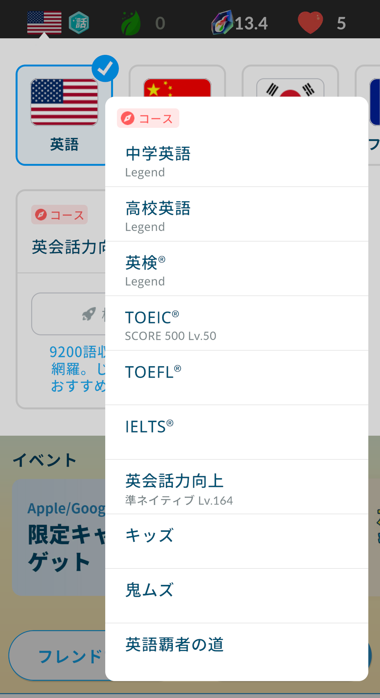
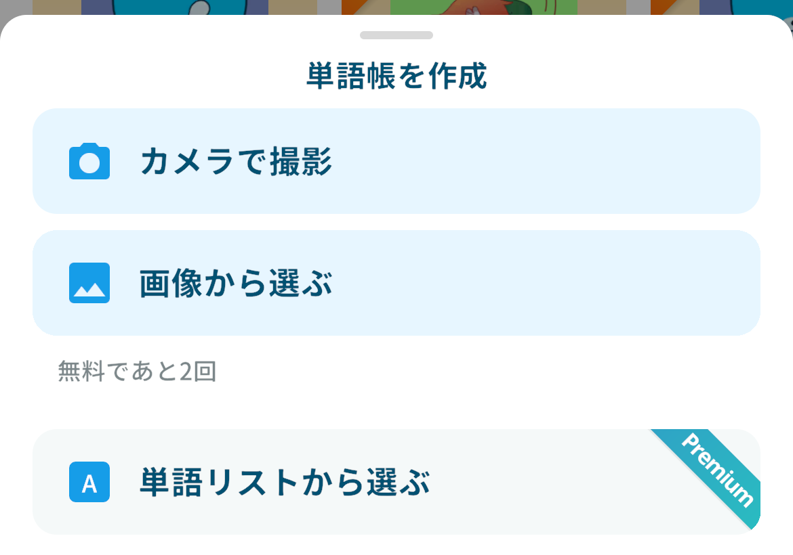
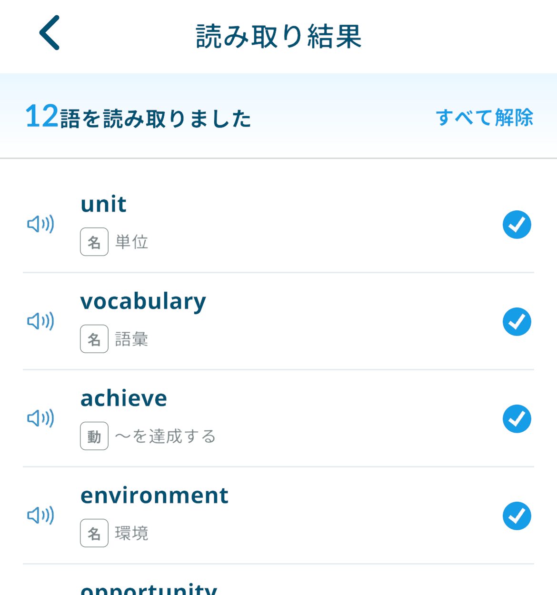
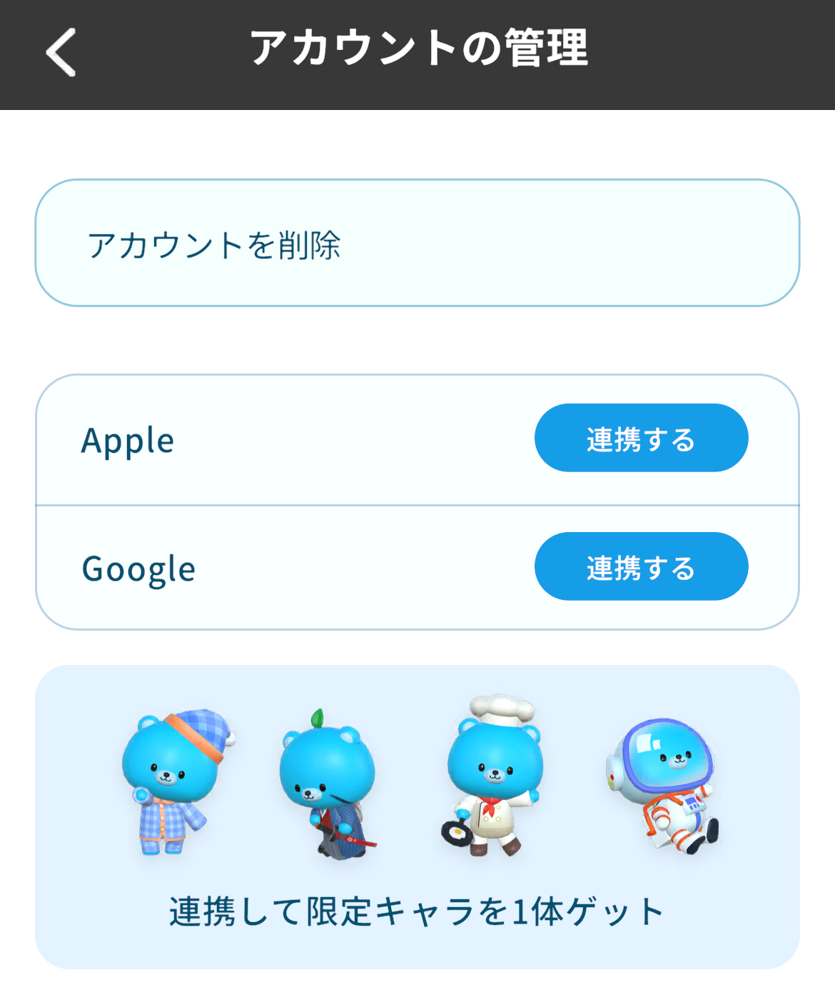
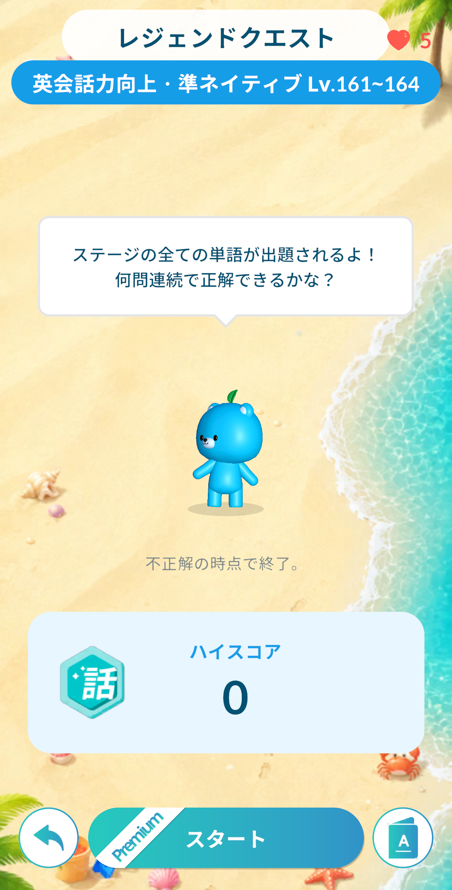
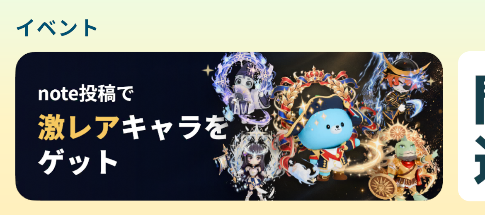

「写真から単語帳」や
「鬼ムズ」など、
5つの要素を追加
2026/10/9 17:00
モチタン・モチスピを開発している神谷です。
v12.1.0 へのアップデートにより、モチタンへの新コース追加、写真から単語帳やフレーズ帳を作成する機能、アカウント連携での限定キャラをプレゼントする機能、ステージごとのレジェンドクエストが追加されます。また、note投稿キャンペーンを開始しました。
モチタン：新コース「英語覇者の道」「鬼ムズ」を追加
モチタンの英語コースに「英語覇者の道」と「鬼ムズ」を追加しました。
- 「英語覇者の道」は、超基礎から超難単語まで約24,500語を収録しており、この1コースで基礎から最難関まで学べます。
- 「鬼ムズ」は、どのコースにも収録されていない難単語だけを約5,400語収録した、他のコースでは物足りない人向けのコースです。
- どちらのコースも、レジェンド入りを達成すると、限定のミニモチベアがもらえます。

操作手順： マイページ > コース変更
※ヘッダーの「コース変更」からも切り替えられます。
モチタン・モチスピ：写真から単語帳・フレーズ帳を作成
教科書や単語帳、字幕、記事などの写真から、単語帳やフレーズ帳を作成したり、既存の単語帳やフレーズ帳に追加したりできるようになりました。
- 「カメラで撮影」した写真や、「画像から選ぶ」ことで、一度に10枚まで写真を読み込めます。
- 読み取った単語やフレーズの中から、登録したいものを選んで作成・追加します。
- 無料プランの方は累計2回まで、Premium 会員の方は1日10回まで利用できます。
- 学習中の言語に合わせて文字を読み取ります。


操作手順：
単語帳 > 写真から作成
単語帳詳細 > 単語を追加 > 写真
フレーズ帳 > 写真から作成
フレーズ帳詳細 > フレーズを追加 > 写真
※「写真から作成」は、単語帳・フレーズ帳の一覧の右下にある「＋」ボタンから選べます。
モチタン・モチスピ：アカウント連携で限定キャラをプレゼント
Apple または Google のアカウントを連携すると、最初のモチベア4体のうち、まだ持っていない限定キャラを1体プレゼントします。
- プレゼントは1回限りです。
- まだ連携していない方には、ホームにバナーが表示され、バナーをタップすると「アカウントの管理」画面が開きます。
- アカウントを連携しておくことで、機種変更やアプリを削除したときにもデータを引き継げます。

操作手順： マイページ > 設定 > アカウントの管理
モチタン・モチスピ：ステージごとのレジェンドクエスト（Premium限定）
冒険で、ステージごとに「レジェンドクエスト」へ挑戦できるようになりました。
- ステージのレジェンドクエストでは、そのステージのすべての単語（モチスピはフレーズ）が出題され、不正解になった時点で終了します。
- ステージを走破すると挑戦可能になります。
- 挑戦できるのは Premium 会員の方のみです。
- コース全体のレジェンドクエストも、これまで通りプレイできます。

モチタン・モチスピ：note投稿キャンペーンの開始
note でモチタンやモチスピに関する記事を書いて報告すると、限定キャラがもらえるキャンペーンを開始しました。
- 500文字以上の公開記事に「#モチタン」または「#モチスピ」のタグをつけて投稿し、記事のURLを報告することが条件です。
- 報告前に記事の下書き状態を解除し公開してください。
- 1記事の報告で1体、最大5記事の報告で5体すべての限定キャラを重複なしのランダムで獲得できます。
- 本キャンペーンは予告なく変更または終了する場合があります。
- 本キャンペーンはnote株式会社とは関係ありません。

ホームのバナーをタップして表示されるページから、記事を書いたあとに「投稿を報告する」を押して記事のURLを報告してください。
開発者 神谷創